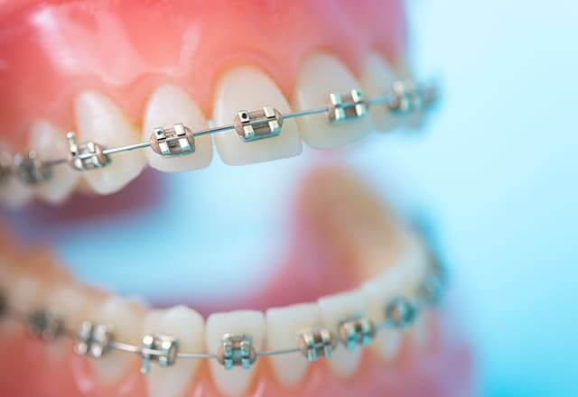
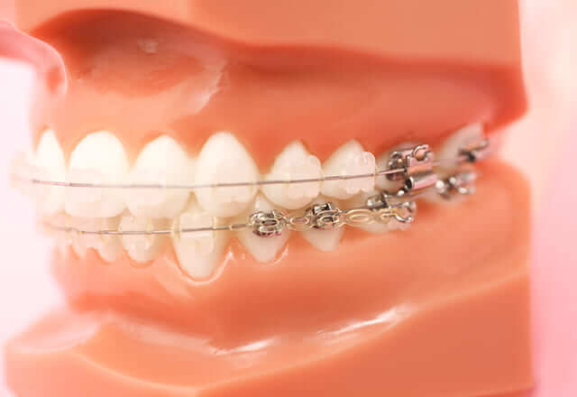
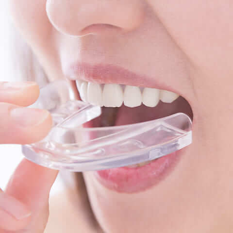

part矯正治療メニュー｜部分矯正気になっている一部分だけの矯正治療
矯正治療は、歯列全体に対して行うものだと思っていませんか？ 実際は、そうではありません。気になる一部分だけに行う矯正治療もあります。それが「部分矯正（MTM）」です。
部分矯正は、動かす歯が少ないことで治療期間を短縮したり、費用を抑えたりすることも可能です。部分矯正（MTM）については、お気軽に渋谷区の「医療法人社団ルーブル歯科・矯正歯科」までご相談ください。
部分矯正のメリット・デメリット
| Merit | Demerit |
|---|---|
|
|
「全顎矯正」と「部分矯正」、どう違う？
歯列全体に対する矯正治療を「全顎矯正」といいます。部分矯正との違いは、以下の通りです。
| 全顎矯正 | 部分矯正 | |
|---|---|---|
|  |  | |
| 治療対象 | 歯列全体 | 一部分 |
| 治療期間 | お口の状態によるが、一般的に2～3年 | お口の状態によるが、一般的に2～6ヶ月 |
| 痛み | 比較的ある | 比較的少ない |
| 費用 | 比較的高額 | 比較的抑えられる |
このような方に部分矯正がおすすめ
- 前歯だけ気になっている方
- できるだけ短期間で矯正治療を終えたい方
- できるだけ費用を抑えたい方
- なるべく痛みの少ない矯正治療をしたいという方
医療法人社団ルーブル歯科・矯正歯科の部分矯正
部分矯正は歯列の中の気になる一部分だけを対象として、歯並びをきれいに整える治療です。どなたでもできるわけではなく、部分矯正が適しているかどうかは患者様のお口の中の状態によるといえます。その判断は、診察してみないと行えません。
当院では、一人ひとりのお口の状態を詳細に調べるのはもちろん、治療に対するご要望を伺ったうえで、患者様に適した治療法をご提案しています。「部分矯正が気になる」「できれば部分矯正を選びたい」という方は、お気軽に当院までご相談ください。
～医療法人社団ルーブル歯科・矯正歯科の無料サービス～
当院では患者様のご負担を軽減するために、次の3つのことを無料サービスにてご提供しています。

カウンセリング
費用や治療法、期間など、矯正治療についてわからないことはありませんか？ 当院ではカウンセリングを無料にて行っています。何でもご相談ください。

ホームホワイトニング無料
当院では矯正治療の期間中に、Googleの口コミ書いていただいた方にはホームホワイトニング一本プレゼントしております。マウスピース型矯正は治療中に、それ以外の治療法については保定期間に行います。
- 
リテーナー（保定装置）
新品交換
保険診療で定期検診に来られた方には、矯正治療後の保定装置（リテーナー）を無料にて新品に交換させていただきます。常にきれいな装置で快適です。
part矯正治療メニュー｜部分矯正人生の大切なシーンを一層美しく彩るための矯正治療をご紹介
第一志望への就職に成功するために
突然ですが、「メラビアンの法則」ってご存じですか？ アメリカのメラビアンという心理学者が提唱した概念で、人の第一印象は初めて会って数秒ほどで決まり、その第一印象に影響を与えるのは、視覚情報が55％、聴覚情報が38％、言語情報が7％……というものです。
これを就職活動の面接で考えると、その人の話の内容よりも、「笑顔で穏やかな口調で話している」といったことのほうが、面接官に良い印象を与えるということになります。
それはわかっていても、歯並びが悪くて口元にコンプレックスがあり、笑顔になるのも難しいし快活に話すこともできない。そんな人もいるかもしれません。逆に言うと、整った歯並びの美しい口元なら、面接官に対して自信を持って笑顔を見せることができ、自然体で話せる可能性が高くなるということです。
実は、大学への入学時は、歯列矯正を始めるのに絶好のタイミング。勤め始めると治療に通う時間を確保するのも難しくなりますが、学生時代は比較的時間に余裕がある時期です。入学と同時に矯正治療をスタートすれば、就職活動を行うころには治療が完了していることがほとんどです。
自身が主役の結婚式や成人式をより美しい笑顔で迎えるために
結婚式や成人式は、ご自身が主役になるかけがえのない日。美しい口元を手に入れ、素敵な笑顔で迎えたいですよね。でも、矯正治療は2年も3年もかかるのでは……。ご心配いりません。当院では、短期間で治療を完了させるプランをご用意。それに加え、目立つ前歯だけを動かす部分矯正（MTM）や取り外しができるマウスピース型矯正など、さまざまな選択肢をご用意しています。人生の一大イベントまで日がないからと諦めず、まずはお気軽にご相談ください。
愛するスポーツで本来の実力を最大限発揮するために
噛み合わせの状態は全身の筋力に影響を与えると言われています。また、正しい噛み合わせは、「脳の働き」をも改善し、ストレス耐性、そして集中力が高まると言われています。つまり噛み合わせを正すことで、身体的にも精神的にも良い影響があるということです。アスリートが歯を矯正した結果パフォーマンスが向上し、本来の力を最大限発揮できるようになったという話を聞くことがあるのは、そういった理由からと思われます。
また、アスリートに限りませんが、噛み合わせが整えば、「咀嚼」がうまくいき、しっかり栄養を摂取することができます。この点も、体作りにおいて重要なポイントです。
そしてそもそも歯並びが乱れていると、衝撃により唇や口腔内が傷ついたり、歯を破折したりする可能性を高めてしまいます。より安全にスポーツを行うためにも、矯正治療により噛み合わせを整えることをおすすめいたします。
付け八重歯
口元からちらっと覗く八重歯。これがかわいいと、近年人気を集めていることをご存じですか？ そこで当院では、「付け八重歯」をご用意しています。元の歯を削ることなくつくりものの八重歯を固定する付け八重歯で、笑顔をよりチャーミングにしませんか？
～付け八重歯について知っておきたいこと～
付け八重歯は、若者に人気の施術ですが、リスクなどについてもきちんと理解しておくことが必要です。
- 付け八重歯は固定式のため、付けたまま食事がとれます。
- 歯の状態などによっては、適用できないケースもあります。
- 20歳未満の方は、保護者の方の同意が必要です。
笑顔をチャーミングにする付け八重歯。気になる方は、お気軽に当院までご相談ください。
費用：38,500円（税込）